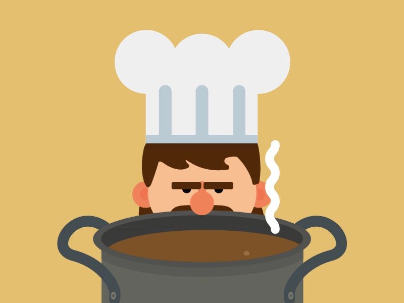
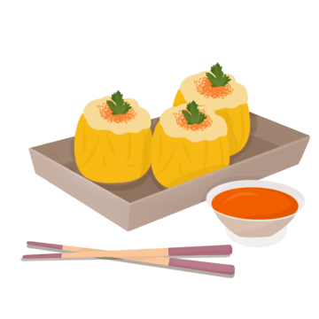
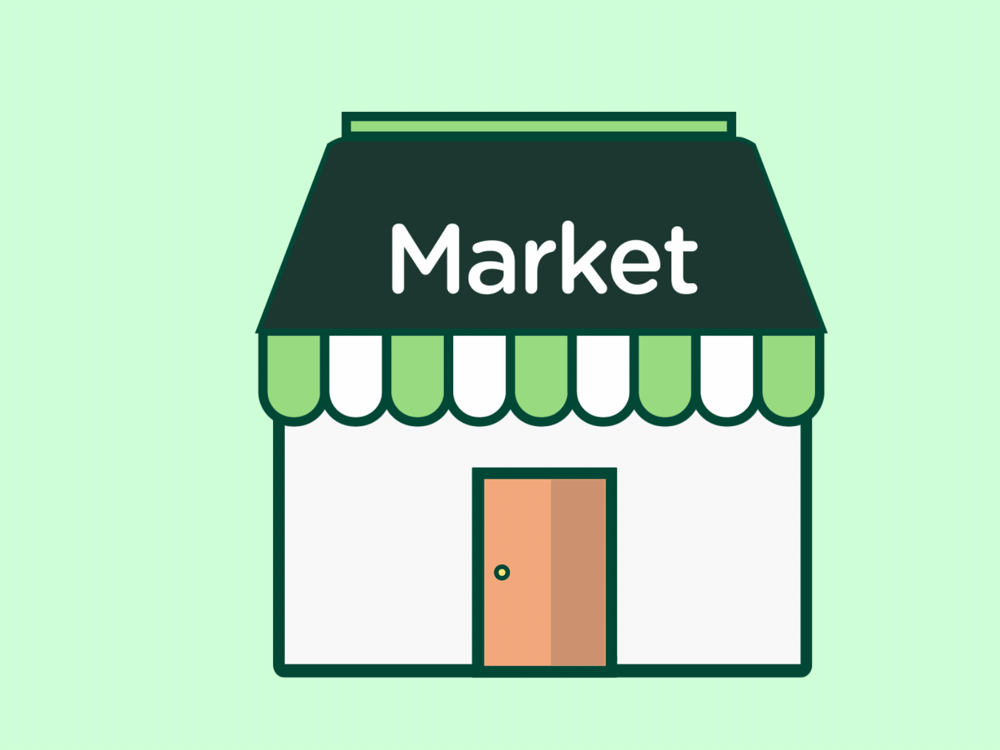
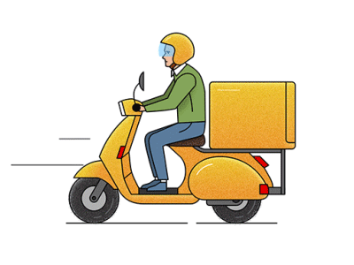
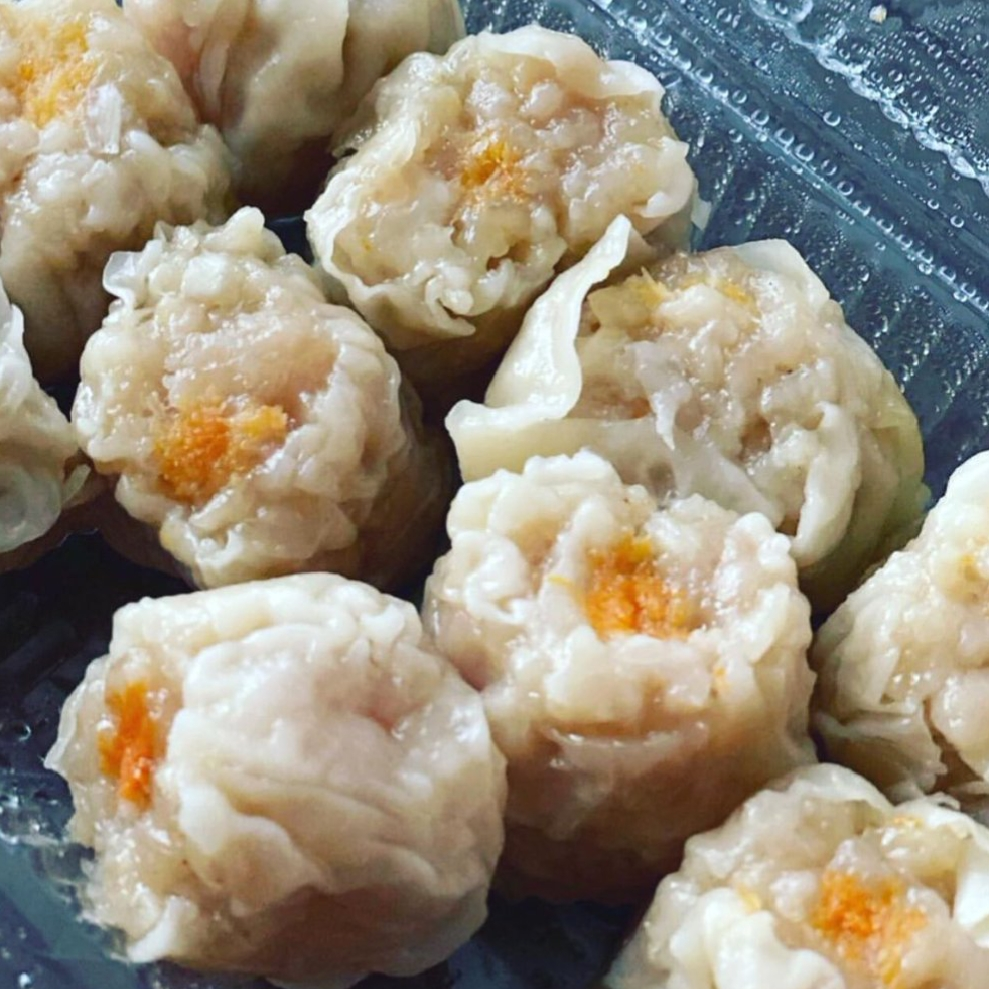
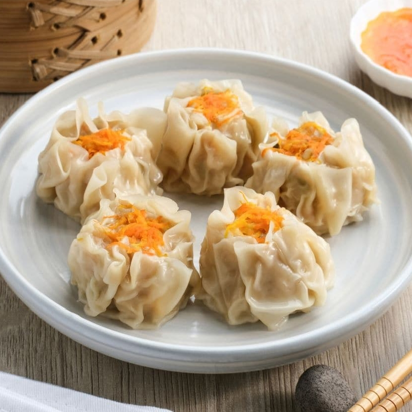
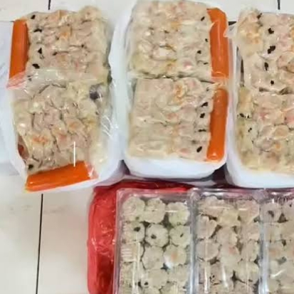

setiap dimsum kami dibuat menggunakan bahan halal pilihan agar dapat dinikmati dengan tenang tanpa mengurangi kelezatannya.



Kami membuatnya dengan sepenuh hati, dari bahan pilihan dan resep yang kami jaga turun temurun.
Di antara cahaya sore yang mulai meredup, ada hangat dimsum yang tetap sederhana menemani senja.


Kami juga menyediakan porsi lebih besar bagi rekan usaha, agar bisa dikreasikan kembali sesuai kebutuhan dan selera.
setiap dimsum kami dibuat menggunakan bahan halal pilihan agar dapat dinikmati dengan tenang tanpa mengurangi kelezatannya.

Kami juga menyediakan dalam porsi yang lebih besar, sebagai bentuk dukungan untuk rekan usaha yang ingin mengembangkan kreasi dimsum. Dengan bentuk dasar yang kami jaga kualitasnya, menjadi dasar yang fleksibel untuk berbagai variasi olahan tanpa menghilangkan cita rasa aslinya
Kios Bah Uteng berdiri pada tahun 2025 dari sebuah gerobak kecil di depan kios sederhana. Berawal dari keadaan yang tidak memiliki penghasilan tetap dari pekerjaan resmi, kami mencoba memulai usaha dari kemampuan yang kami miliki: membuat dimsum original.
Dimsum di Kios Bah Uteng dibuat langsung di rumah menggunakan resep yang diwariskan dari seorang bos keturunan Tiongkok kepada ayah kami. Dari resep itulah perjalanan kecil ini dimulai.
Perjalanan kami tidak selalu mulus. Kami pernah salah mencampur bumbu, pernah kehilangan bahan karena daging terlalu lama dibiarkan di luar, bahkan pernah tidak bisa berjualan selama dua hari karena kulit dimsum tertahan di ekspedisi hingga berjamur.
Kami juga sering mencoba berbagai hal baru. Pernah memakai topping sosis, tetapi hasilnya kurang cocok karena mudah lepas. Sampai akhirnya kami memilih topping wortel yang menjadi ciri khas dimsum kami sampai sekarang.
Kadang ayah yang menjaga gerobak, kadang juga saya sendiri. Dengan gerobak kecil dan kompor gas yang selalu standby, kami terus belajar sedikit demi sedikit untuk menyajikan dimsum yang lebih baik setiap harinya.
Bagi kami, Kios Bah Uteng bukan sekadar tempat jualan. Ini adalah cerita tentang usaha keluarga kecil yang tumbuh dari proses trial and error, kerja keras, dan semangat untuk terus bertahan.


